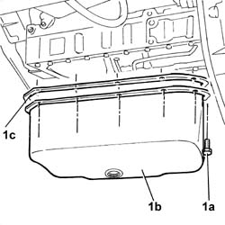

1020A12 CRANKCASE OIL SUMP - VEHICLES WITH AIR CONDITIONER - R + R AND REPLACE GASKET
- Path
- Procedures > 10 ENGINE UNIT > 1020 CRANKCASE SUMP AND COVERS > 1020A CRANK CASE OIL SUMP > 1020A12 CRANKCASE OIL SUMP - VEHICLES WITH AIR CONDITIONER - R + R AND REPLACE GASKET
- Kind
- repair procedure (removal / refitting; the operation number is the code)
- Applies to
- engines: 2.8 JTD 8V; all production periods
- Interactive page
- https://sloeber94.github.io/elrnDB-fDct/en/#/244000658
Applies to: engines: 2.8 JTD 8V; all production periods
 Removing
Removing
 Refitting
Refitting
Applies to: engines: 2.8 JTD 8V; all production periods
Refitting
RemovingValue - daNm | Fastening | Component | Ø | |
|---|---|---|---|---|
- | 1,8 | Bolt | ENGINE OIL SUMP | M8 |